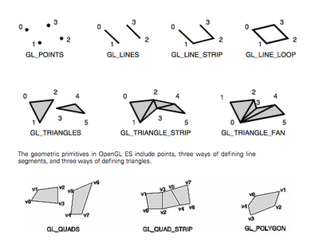
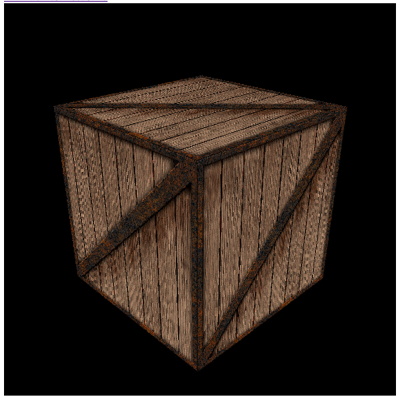
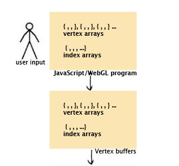
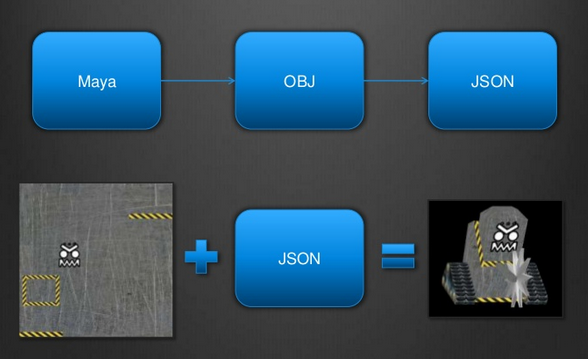

WebGL
What is WebGL?
- JavaScript meets the GPU
- Fast programmable drawing
- OpenGL ES 2.0 for HTML5 Canvas
What is OpenGL ES 2.0?
- OpenGL for Embedded Systems
- Subset of desktop OpenGL
- Used for 3D games on mobile
Vertices & Primitives
Matrices
Used to represent transformations (translation, rotation, scaling)

Textures
Just an image that you map to a set of vertices
Shaders
Programs that run per-vertex or per-fragment on the GPU.
ShadertoyGraphics pipeline
Browser support
Chrome 9+
Firefox 4+
Safari 5.1+
Opera 12+
IE 11, Chrome Frame
IEWebGL, cWebGL
Three.js
Three.js is a JS 3D Engine
- github.com/mrdoob/three.js
- Lightweight
- Easy to use
- WebGL renderer
- Also has Canvas and SVG renderers
Renderer
Create a WebGLRenderer
var renderer = new THREE.WebGLRenderer({antialias: true}); renderer.setSize(document.body.clientWidth, document.body.clientHeight);
Plug it in
document.body.appendChild(renderer.domElement);
And make it pretty
renderer.setClearColorHex(0xEEEEEE, 1.0); renderer.clear();
Wow!
Create a Camera
// new THREE.PerspectiveCamera(FOV, viewAspectRatio, zNear, zFar); var camera = new THREE.PerspectiveCamera(45, width/height, 1, 10000); camera.position.z = 300;
Make a Scene with a Cube
var scene = new THREE.Scene(); var cube = new THREE.Mesh(new THREE.CubeGeometry(50,50,50), new THREE.MeshBasicMaterial({color: 0x000000})); scene.add(cube);
And render the Scene from the Camera
renderer.render(scene, camera);
Animation
Can we make it move?
Yes we can!
function animate(t) { // spin the camera in a circle camera.position.x = Math.sin(t/1000)*300; camera.position.y = 150; camera.position.z = Math.cos(t/1000)*300; // you need to update lookAt on every frame camera.lookAt(scene.position); // renderer automatically clears unless autoClear = false renderer.render(scene, camera); window.requestAnimationFrame(animate, renderer.domElement); }; animate(new Date().getTime());
Lighting
Lights
Let's create a Light
var light = new THREE.SpotLight(); light.position.set( 170, 330, -160 ); scene.add(light);
And a lit cube
var litCube = new THREE.Mesh( new THREE.CubeGeometry(50, 50, 50), new THREE.MeshLambertMaterial({color: 0xFFFFFF})); litCube.position.y = 50; scene.add(litCube);
There we go!
Shadows
Three.js has shadow maps.
You need to enable them per-light and per-object.
The shadows only work on SpotLights.
// enable shadows on the renderer renderer.shadowMapEnabled = true; // enable shadows for a light light.castShadow = true; // enable shadows for an object litCube.castShadow = true; litCube.receiveShadow = true;
Added interest
Let's add a ground plane
var planeGeo = new THREE.PlaneGeometry(400, 200, 10, 10); var planeMat = new THREE.MeshLambertMaterial({color: 0xFFFFFF}); var plane = new THREE.Mesh(planeGeo, planeMat); plane.rotation.x = -Math.PI/2; plane.position.y = -25; plane.receiveShadow = true; scene.add(plane);
And make the cube spin
litCube.position.x = Math.cos(t/600)*85; litCube.position.y = 60-Math.sin(t/900)*25; litCube.position.z = Math.sin(t/600)*85; litCube.rotation.x = t/500; litCube.rotation.y = t/800;
Lighting recap
Set mesh material to new THREE.MeshLambertMaterial or new THREE.MeshPhongMaterial
Create a light new THREE.SpotLight(color)
Add the light to the scene scene.add(light)
Turn on shadows if you need them
scene.shadowMapEnabled = true; light.castShadow = true; object.castShadow = true; object.receiveShadow = true;
Useful uses
Bar graph
var grid = /* 2D Array */ var barGraph = new THREE.Object3D(); scene.add(barGraph); var max = /* Grid max value */ var mat = new THREE.MeshLambertMaterial({color: 0xFFAA55}); for (var j=0; j<grid.length; j++) { for (var i=0; i<grid[j].length; i++) { var barHeight = grid[j][i]/max * 80; var geo = new THREE.CubeGeometry(8, barHeight, 8); var mesh = new THREE.Mesh(geo, mat); mesh.position.x = (i-grid[j].length/2) * 16; mesh.position.y = barHeight/2; mesh.position.z = -(j-grid.length/2) * 16; mesh.castShadow = mesh.receiveShadow = true; barGraph.add(mesh); } }
Bar graph in action
Scatter plot
var scatterPlot = new THREE.Object3D(); var mat = new THREE.ParticleBasicMaterial( {vertexColors: true, size: 1.5}); var pointCount = 10000; var pointGeo = new THREE.Geometry(); for (var i=0; i<pointCount; i++) { var x = Math.random() * 100 - 50; var y = x*0.8+Math.random() * 20 - 10; var z = x*0.7+Math.random() * 30 - 15; pointGeo.vertices.push(new THREE.Vertex(new THREE.Vector3(x,y,z))); pointGeo.colors.push(new THREE.Color().setHSV( (x+50)/100, (z+50)/100, (y+50)/100)); } var points = new THREE.ParticleSystem(pointGeo, mat); scatterPlot.add(points); scene.fog = new THREE.FogExp2(0xFFFFFF, 0.0035);
Scatter plot in action
GUI controls
DAT.GUI controls
var gui = new DAT.GUI(); gui.add(cube.scale, 'x').min(0.1).max(10).step(0.1); gui.add(cube.scale, 'y', 0.1, 10, 0.1); gui.add(cube.scale, 'z', 0.1, 10, 0.1);
Scalable cube
Control selected object
var controller = new THREE.Object3D(); var gui = new DAT.GUI({width: 160}); controller.setCurrent = function(current) { this.current = current; this.x.setValue(current.position.x); this.y.setValue(current.position.y); this.z.setValue(current.position.z); }; controller.x = gui.add(controller.position, 'x').onChange(function(v){ controller.current.position.x = v; }); // etc.
How to select?
Project a ray into the scene and find intersecting objects.
var projector = new THREE.Projector(); window.addEventListener('mousedown', function (ev){ if (ev.target == renderer.domElement) { var x = ev.clientX; var y = ev.clientY; var v = new THREE.Vector3((x/width)*2-1, -(y/height)*2+1, 0.5); projector.unprojectVector(v, camera); var ray = new THREE.Ray(camera.position, v.subSelf(camera.position).normalize()); var intersects = ray.intersectObjects(controller.objects); if (intersects.length > 0) { controller.setCurrent(intersects[0].object); } } }, false);
Outburst
3d - shooter - multiplayer - realtime
Models
